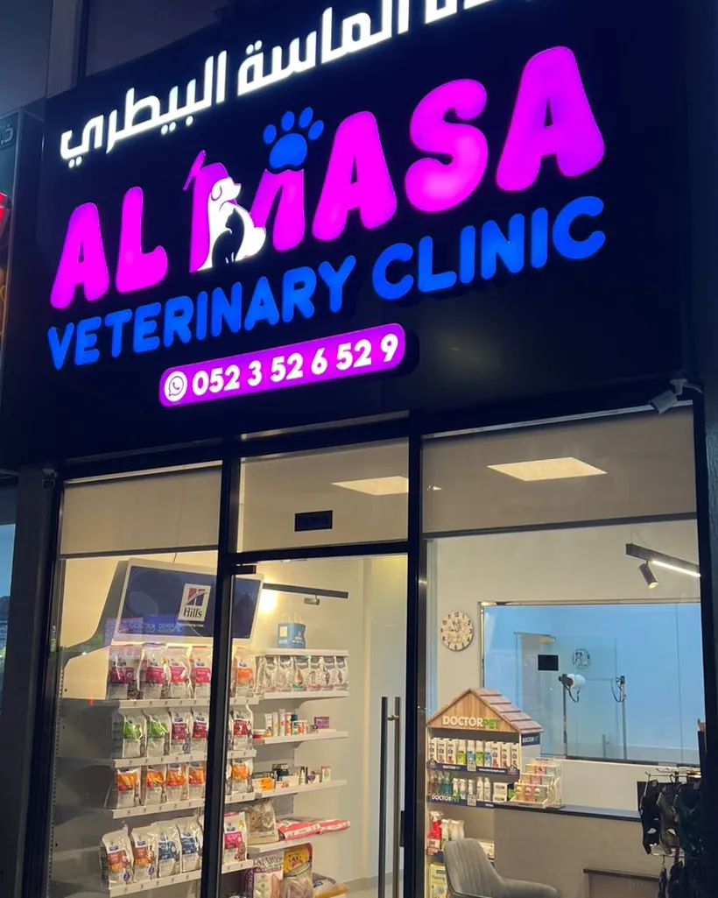
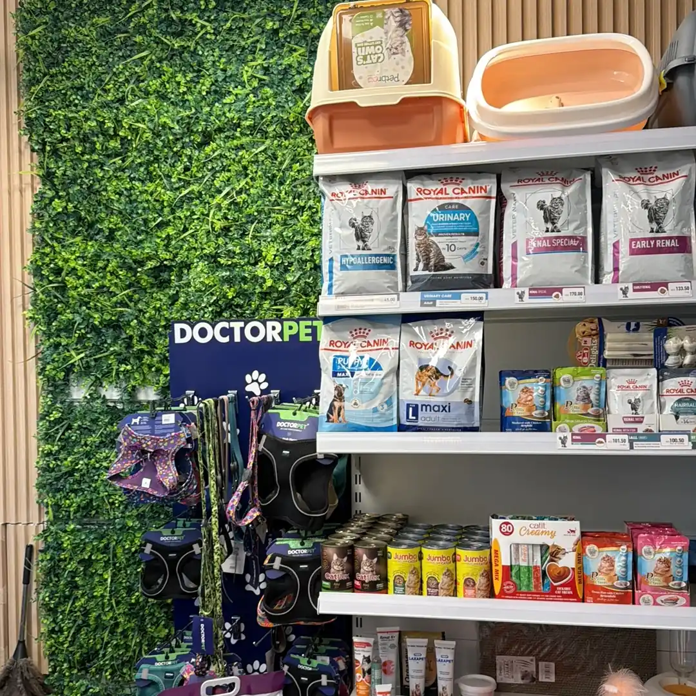
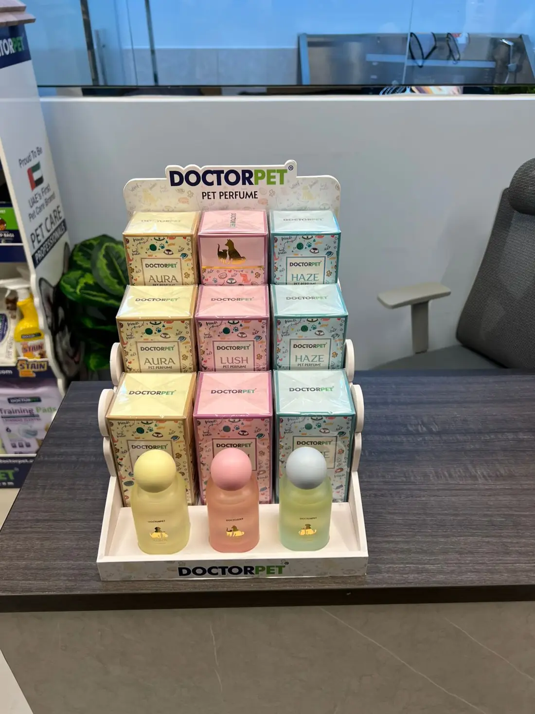
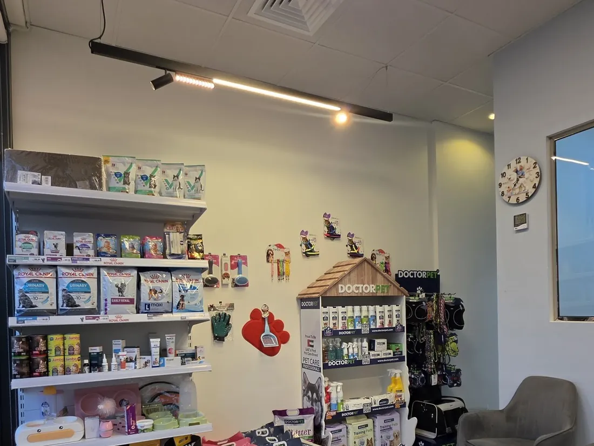

Care and supplies for your pets in Ajman. Message us on WhatsApp to ask about products and services.



Message us to confirm what’s available right now — we’re happy to help you choose.

Message us to check today’s timings.